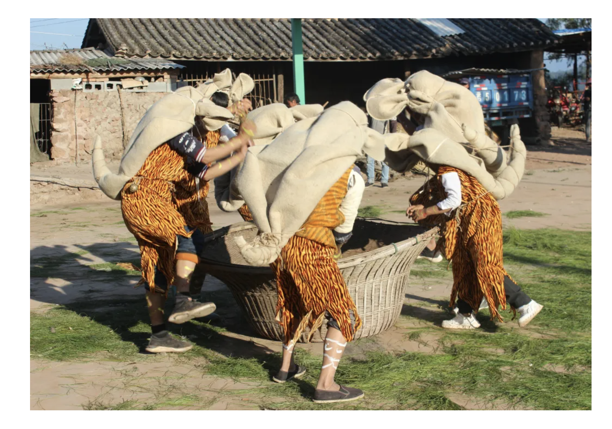
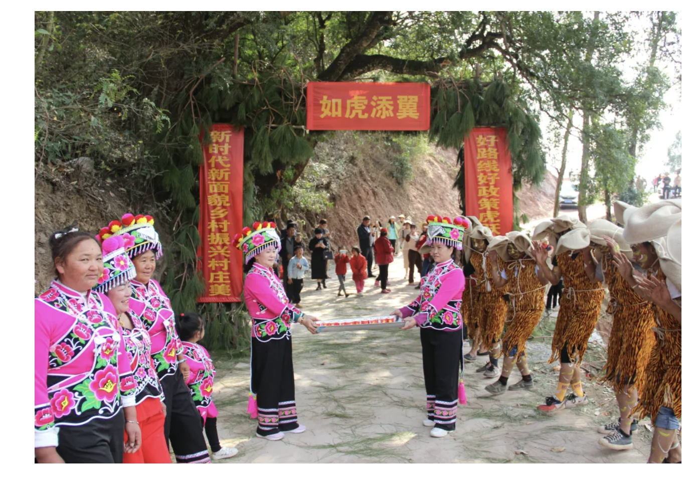
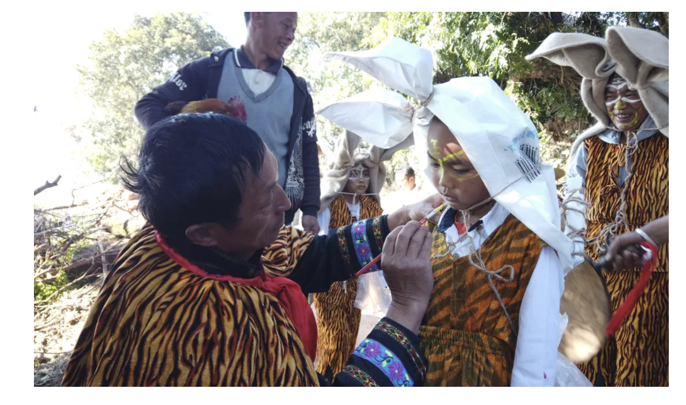
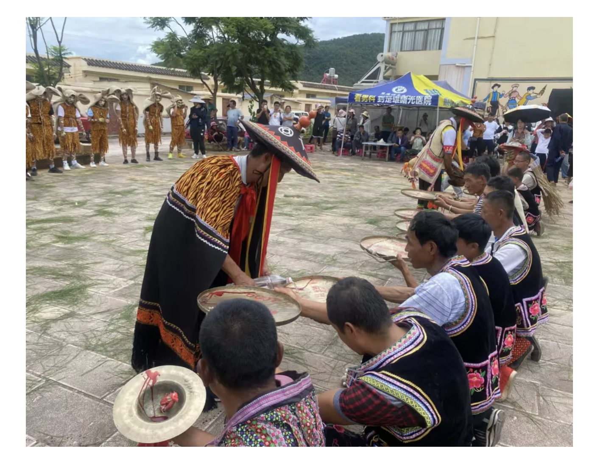
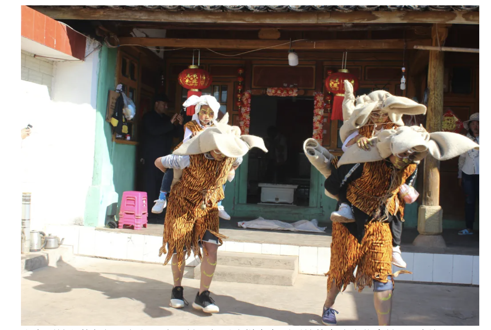

遇见非遗 | 云南双柏大庄镇：敲锣打跳震天响 非遗古韵传四方
云南省楚雄彝族自治州双柏县大庄镇素有“仙鹤古镇”美誉，被命名为“省级历史文化名村”，多民族文化在这里相遇交融， 成就大了历史文化、民族文化和农耕文化融合的多元文化聚集地。以洒利黑“正月十五”祭虎、麻栗树“六月二十六”火把节为 代表，大庄镇在保持传统民俗的同时，不断注入时代新意，把非遗项目融入民俗节庆活动，成了富有浓厚文化特色的符号。  古时，每逢节日或喜事，大庄的彝族群众就拿出家中的铜锣，围火敲锣打跳，狂欢达旦。如果户与户相隔一段距离，或村 与村有田地相隔，也要在田地边宽敞处跳上一场，以此来安顿五谷之魂，祈求粮食丰收。这些习俗经过千百年传承保存至今， 在不断创坐中得到全新的演绎，在节庆活动时给群众带来一场场热闹喜庆的非遗民俗盛宴。  大庄镇麻栗树村是彝族罗婺支系聚居地，每年农历六月二十四至二十八，有“跳六月”活动。大锣笙是彝族先民遗留下来的 一种祭祀与娱乐兼有的原始图腾舞蹈，由18名中青年男性代表组成，用颜料画虎脸、画虎纹，表演彝族生产生活的内容。“送 火神”之前，毕摩会村镇在广场上祈福，踩犁头、舔犁头。表演时手持蛇龙和布谷鸟的两个大神，队伍鸣锣起舞，锣声变幻不 定，内容为祈福驱邪。每年附近举办节日，大锣笙都是必不可少的表演，已成为当地老百姓心目中喜闻乐见的保留节目。  在大庄镇洒利黑村，有一个彝族支系称老虎为“倮马”，自称“倮倮”即“虎族”。每年农历正月初十至正月十五，是“倮倮” 支系一年一度的“虎节”，即老虎笙。老虎笙分为请虎、祭虎、送虎三个过程：正月初十、十一、十二请虎；正月十三、十四 祭虎；正月十五送虎，其舞蹈形式有表现老虎生活习性的12套虎舞和表现生产劳动的一系列舞蹈。  毕摩负责领队整套祭祀仪式，组织20多名男性将毡子捆扎成的虎皮披在肩上，身体用各种颜料画上虎纹，在铜锣和羊皮 扁鼓伴奏下跳虎图腾舞。队伍中的“小老虎”代表虎神庇佑下成长的新一代；猫作为代替老虎“徒弟”在虎窜家时收下村民供 奉的心意；正月初十时“虎王”“山神”在祭祀时负责背“小老虎”。  盛大而神秘的祭祀，每年一次。村民们用这样古老而原始的方式来信奉神灵、祈福驱灾，一代代传承着古老的彝族文化。 彝族先民崇虎，反映了人与自然和谐相处的发展观，反映了彝族人民粗犷、豪放、勤劳的性格，承载着彝族许多重大历 史文化信息和原始记忆，更是彝族虎文化的“活化石”。